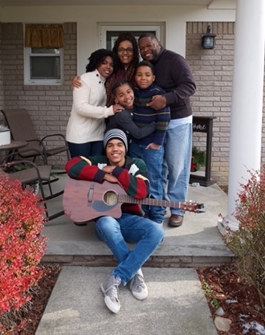

Communicate With Clarity
Move from guessing, blaming, or shutting down to honest conversations with a shared language.
Relationship & Family Coaching
Steven Conway helps couples, families, churches, and leaders identify the patterns beneath conflict, communicate with clarity, and practice faith-centered tools that hold up in real life.
Hidden Patterns Shape Relationships
Steven helps people slow the cycle down, name what is really happening, and replace reactive habits with shared language, responsibility, and repeatable tools.
What Changes
Move from guessing, blaming, or shutting down to honest conversations with a shared language.
Learn how to return to each other after tension instead of letting distance become normal.
Name values, roles, pressure points, and hopes so couples and families can move with purpose.
Develop steadier leadership at home, in marriage, and in ministry when things get heavy.
Use biblical wisdom in practical ways without ignoring emotional reality or relational pain.
Create repeatable practices that protect connection long after the session or event is over.
The Shift
Conflict often looks like the problem, but the deeper issue is usually the pattern under it: how people protect themselves, how they interpret each other, and how they respond when they feel unseen.
Steven’s work is designed to help people see the pattern, take ownership, and practice a better way forward one conversation at a time.
Coaching Consultation
This consultation link is for men’s coaching with Steven. It gives you a place to ask about the coaching process, talk through what you are looking for, and see whether the next step makes sense.

Live Teaching
"You cannot surrender what you cannot acknowledge. You cannot heal from what you cannot acknowledge."
How It Works
Identify what keeps repeating in communication, conflict, expectations, or family life.
Use practical language and exercises that make hard conversations easier to enter.
Carry the tools into real decisions, repair moments, and daily habits that matter.
When people get honest, take responsibility, and practice new tools, healing has room to grow.
Contact & Booking
Use the quick message form for coaching, speaking, seminars, grief recovery options, and program questions. You can also call or email directly.
Phone: 313-343-1422
Email: stamena4life@gmail.com
Booking: stevenconway@stamena4life.com
Mail: P.O. Box 210053, Auburn Hills, MI 48326